Resources
Watch. Read. Discover.
Welcome to the Mizuho America library for neurosurgeons. From testimonials by renowned leaders in the field to product brochures, we’ve curated a collection of resources that will introduce you to our wide selection of neurosurgical devices—designed to help you overcome obstacles, fill instrumentation gaps, and refine and elevate surgical techniques.
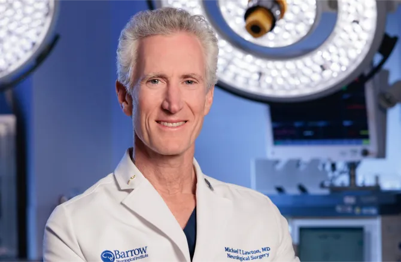
“When you have the right instruments in your hand, then you can just focus on the task and you can focus on, you know, battling that disease and getting the job done.”
Testimonials: Hear from neurosurgical experts
Michael T. Lawton, MD
President and CEO, Barrow Neurological Institute
Professor and Chair, Neurosurgery Chief, Neurovascular Surgery
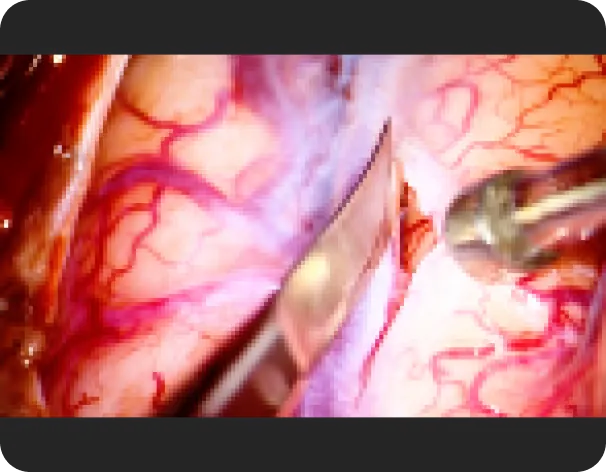
James J. Evans, MD
Professor of Neurological Surgery and Otolaryngology
Chief, Brain Tumor and Stereotactic Radiosurgery Division Jefferson Health
Director, Cranial Base and Pituitary Surgery
Director, Cranial Base and Endoscopic Surgery Fellowship
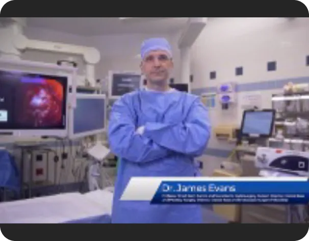
Topic: E3 Evans Elite Endoscopic Instrument Set
Single-shaft, low-profile tools for endoscopic...
Read moreA. Samy Youssef, MD, PhD, MSc, FAANS
Professor & Vice Chairman for Education
Departments of Neurosurgery & Otolaryngology
Director of Skull Base Surgery
University of Colorado School of Medicine
Topic: Dr. Youssef’s Cranial Nerve Dissection Set
A color-coded microsurgical tool set with specialized...
Read moreFady Charbel, MD
Professor and Head, Department of Neurosurgery
University of Illinois Chicago
Topic: Sugita II Multi-Purpose Headframe
A versatile, customizable, ergonomically advanced...
Read moreEric Sauvageau, MD, Surgical Director of Neuro-Oncology
Ricardo Hanel, MD, PhD, Cerebrovascular Neurosurgeon
Co-Medical Directors, Baptist Stroke & Cerebrovascular Center, Jacksonville, Florida
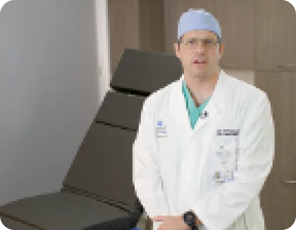
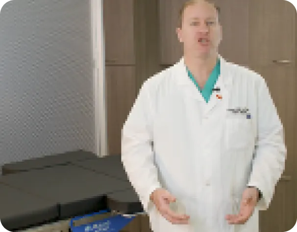
Topic: MST-7300B&BX Table for Microsurgery
Versatile low height that empowers surgeons to optimally position themselves and their patients
Ricardo Hanel, MD, PhD
Cerebrovascular Neurosurgeon
Co-Medical Director, Baptist Stroke & Cerebrovascular Center, Jacksonville, Florida
Topic: MST 7300BX Table for Microsurgery
Facilitates optimal positioning for sitting or using...
Read moreFast facts: more to explore
Sugita II Multi-Purpose Headframe
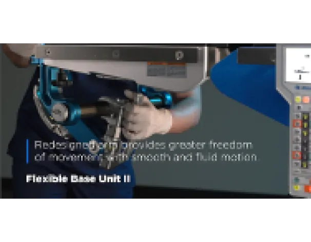
See what makes this flexible, customizable device a valuable addition to your OR
Feather Instruments With Interchangeable Blades
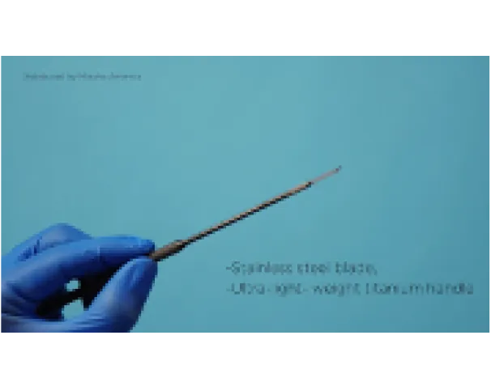
Learn about this first-of-its-kind product line
Discover the MST 7300 BX Table With the 5S Innovation Concept
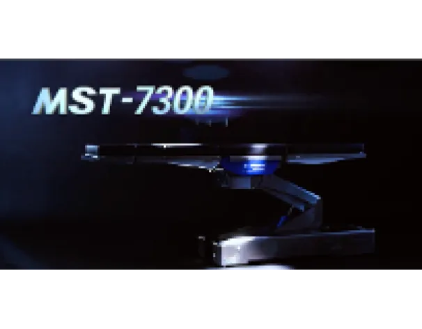
Take a tour of this highly versatile state-of-the-art table
See how our collaborations have helped advance instrumentation
Lawton Elite Series
Designed in collaboration with Michael T. Lawton, MD, President and CEO, Barrow Neurological Institute; Professor and Chair, Neurosurgery; Chief, Neurovascular Surgery
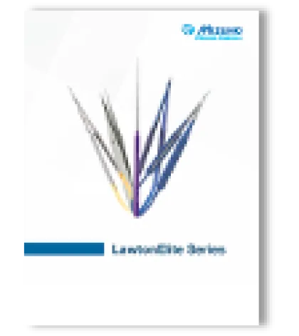
Lawton Elite Series
Read description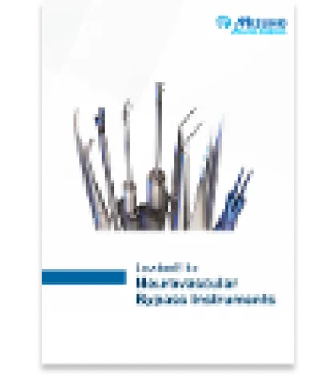
LawtonElite Neurovascular Bypass Instruments
Read description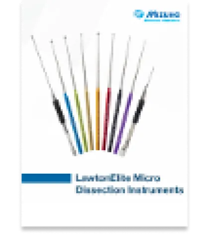
LawtonElite Micro Dissection Instruments
Read description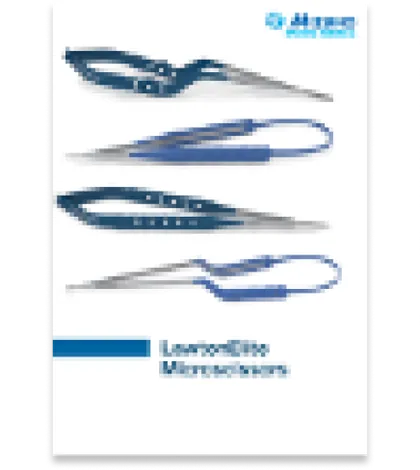
LawtonElite Microscissors
Read description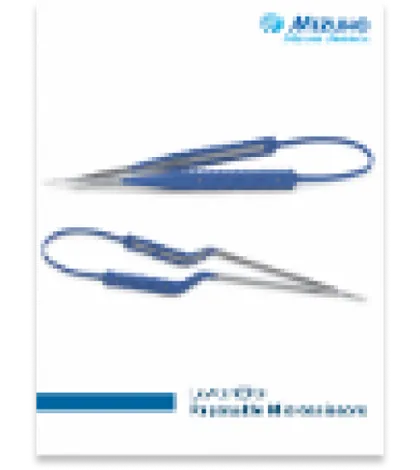
Lawton Elite Reposable Microscissors
Read description
Evans Endoscopic Endonasal Instruments
Designed in collaboration with James J. Evans, MD, Professor of Neurological Surgery and Otolaryngology; Chief, Brain Tumor and Stereotactic Radiosurgery Division, Jefferson Health; Director, Cranial Base and Pituitary Surgery; Director, Cranial Base and Endoscopic Surgery Fellowship
Evans Elite Endoscopic Instruments
Read description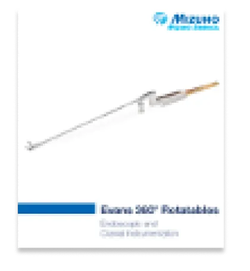
Evans 360° Rotatables
Read description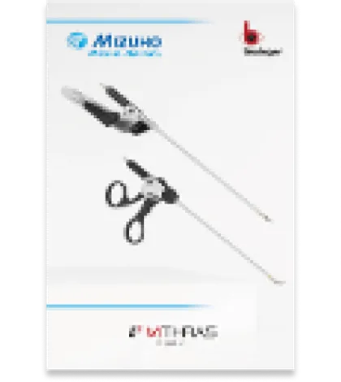
E3 Mithras Bipolar
Read description
Kelly Endoscopic Endonasal and Keyhole Instruments
Designed in collaboration with Daniel F. Kelly, MD, Co-Founder and Director, Pacific Neuroscience Institute; Director, Pacific Brain Tumor Center and Pacific Pituitary Disorders Center; Professor of Neurosurgery, Saint John’s Cancer Institute at Providence Saint John’s Health Center
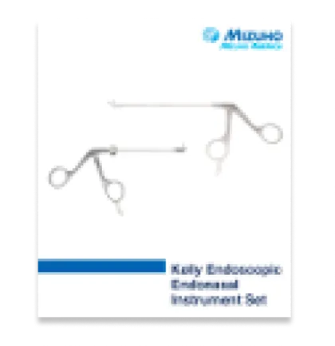
Kelly Endoscopic Endonasal Instrument Set
Read description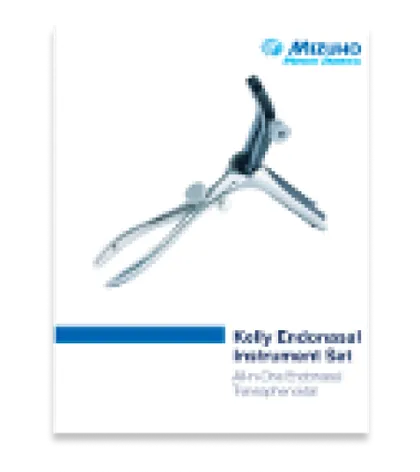
Kelly Endonasal Instrument Set
Read descriptionKelly Keyhole Instrument Set
Read description
Day-Bailes Tapered Locking Suction Tubes
Designed in collaboration with Dr. J. D. Day, MD, Medical Director, Nexus Neuroscience; and Dr. Julian Bailes, MD, Chair, Department of Neurosurgery, Endeavor Health
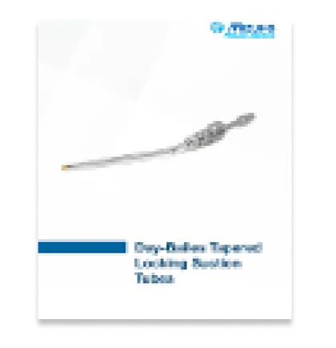
Designed for a wide range of...
Read description
Dr. Youssef’s Cranial Nerve Dissection Set
Designed in collaboration with Dr. A. Samy Youssef, MD, PhD, Professor and Vice Chairman for Education, Departments of Neurosurgery & Otolaryngology, Director of Skull Base Surgery, University of Colorado School of Medicine
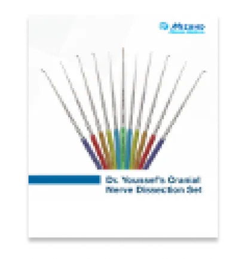
Comprehensive, specialized...
Read description
Feather® K-6420 Micro Blade Angled for Precision Incisions
Designed in collaboration with Dr. Daniel Prevedello, MD, MBA, The Ohio State University - Wexner Medical Center; Brain and Spine Tumor Center; Vice Chair for Academic Affairs; Professor; Director, Minimally Invasive Cranial Surgery Program; College of Medicine; Department of Neurological Surgery
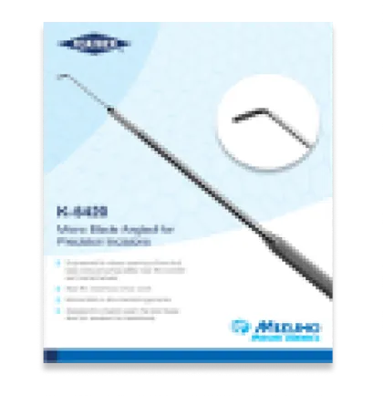
Engineered to facilitate sharp...
Read description
T Endo-Clips
Designed in collaboration with Dr. Erol Veznedaroglu, MD, FACS, FAANS, FAHA, President and CEO, Global Neuroscience Institute; Professor, Robert A. Groff Chair, Department of Neurosurgery, Drexel University College of Medicine
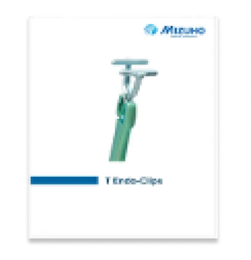
Designed to help improve...
Read description
Cerebellar Pontine Tumor Instruments and Skull Base Instrumentation
Designed in collaboration with Dr. Takanori Fukushima, MD, internationally acclaimed neurosurgeon
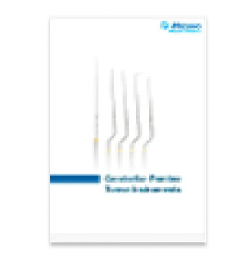
Cerebellar Pontine Tumor Instruments
Read description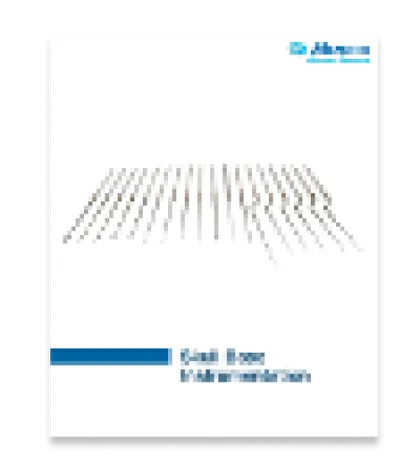
Skull Base Instrumentation
Read description
Check out these brochures for more products that can benefit your neurosurgical practice
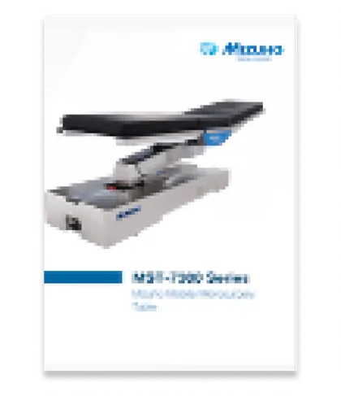
MST-7300 Series Mizuho Mobile Microsurgery Table
Read description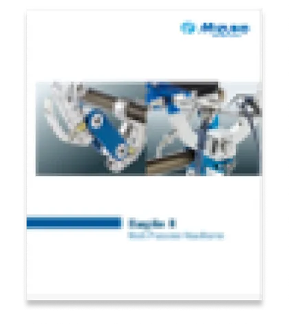
Sugita II Multi-Purpose Headframe
Read description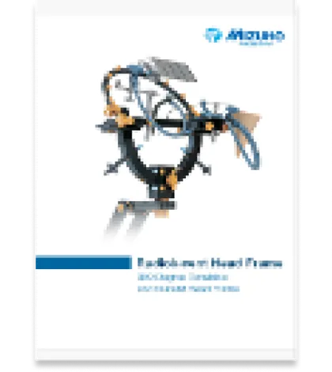
Radiolucent Head Frame
Read description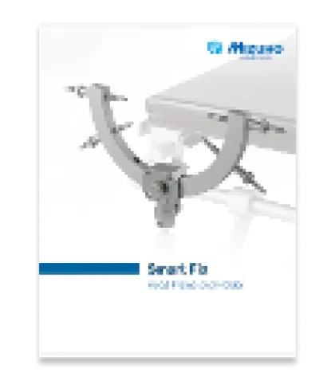
Smart Fix Head Frame and Holder
Read description
T2 Clips: Sugita Titanium Aneurysm Clips and Appliers
Available with the optional Spetzler T2 Clip Applier Rack for enhanced intraoperative efficiency, designed in collaboration with renowned neurosurgeon Robert F. Spetzler, MD, FACS, Emeritus Chair, Neurosurgery, Barrow Neurological Institute
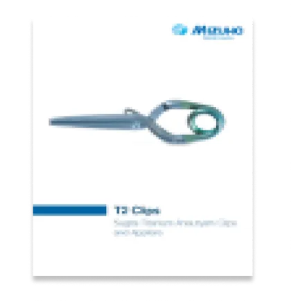
Wide variety of clips and...
Read description
Feather® Micro Surgical Blade for Fine Incision
Featuring bayonetted shape designed by Dr. Daniel Prevedello, MD, Director, Minimally Invasive Cranial Surgery Program; Co-Director of the Skull Base and Pituitary Surgery Center at The James
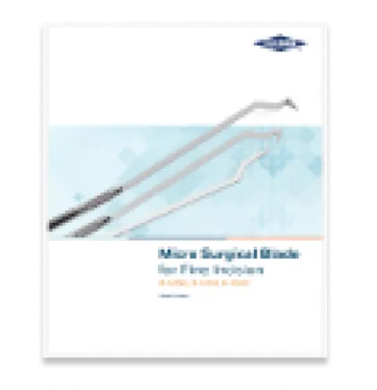
Back-cutting, hook, and straight...
Read description
Vascular Management Solutions from Mizuho
Read descriptionFeather® Micro Surgery
Read description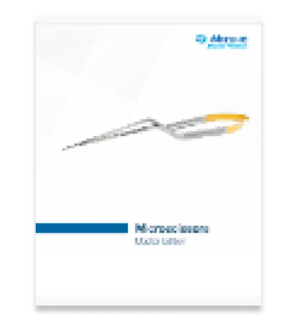
Microscissors Master Edition
Read description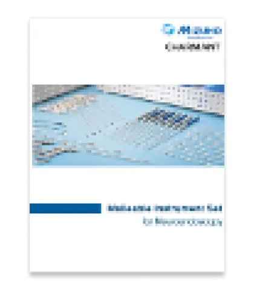
Malleable Instrument Set for Neuroendoscopy
Read description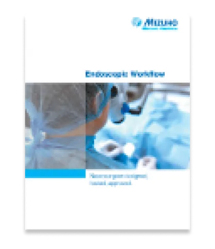
Endoscopic Workflow
Read description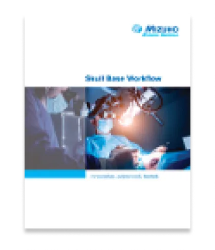
Skull Base Workflow
Read description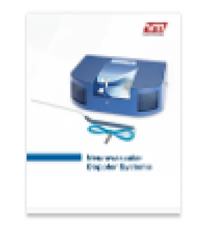
Neurovascular Doppler Systems
Read description